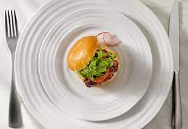

Health and Fitness Tips
1. Do not skip breakfast

Skipping breakfast will not help you lose weight. You could miss out on essential nutrients and you may end up snacking more throughout the day because you feel hungry.
2. Eat regular meals
Eating at regular times during the day helps burn calories at a faster rate. It also reduces the temptation to snack on foods high in fat and sugar.
3. Eat plenty of fruit and veg

Fruit and veg are low in calories and fat, and high in fiber – three essential ingredients for successful weight loss. They also contain plenty of vitamins and minerals.
4. Get more active
Being active is key to losing weight and keeping it off. As well as providing lots of health benefits, exercise can help burn off the excess calories you cannot lose through diet alone.
5. Drink plenty of water
People sometimes confuse thirst with hunger. You can end up consuming extra calories when a glass of water is really what you need.
6. Eat high fiber foods

Foods containing lots of fiber can help keep you feeling full, which is perfect for losing weight. Fiber is only found in food from plants, such as fruit and veg, oats, wholegrain bread, brown rice and pasta, and beans, peas, and lentils.
7. Read food labels
Knowing how to read food labels can help you choose healthier options. Use the calorie information to work out how a particular food fits into your daily calorie allowance on the weight loss plan.
8. Use a smaller plate
Using smaller plates can help you eat smaller portions. By using smaller plates and bowls, you may be able to gradually get used to eating smaller portions without going hungry. It takes about 20 minutes for the stomach to tell the brain it's full, so eat slowly and stop eating before you feel full.
9. Do not ban foods
Do not ban any foods from your weight loss plan, especially the ones you like. Banning foods will only make you crave them more. There's no reason you cannot enjoy the occasional treat as long as you stay within your daily calorie allowance.
10. Do not stock junk food
To avoid temptation, do not stock junk food – such as chocolate, biscuits, crisps, and sweet fizzy drinks – at home. Instead, opt for healthy snacks, such as fruit, unsalted rice cakes, oat cakes, unsalted or unsweetened popcorn, and fruit juice.
11. Cut down on alcohol
A standard glass of wine can contain as many calories as a piece of chocolate. Over time, drinking too much can easily contribute to weight gain.
12. Plan your meals
Try to plan your breakfast, lunch, dinner, and snacks for the week, making sure you stick to your calorie allowance. You may find it helpful to make a weekly shopping list.